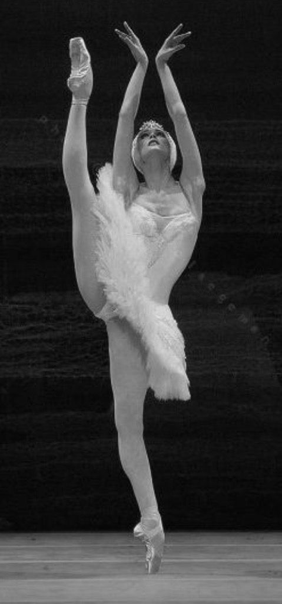
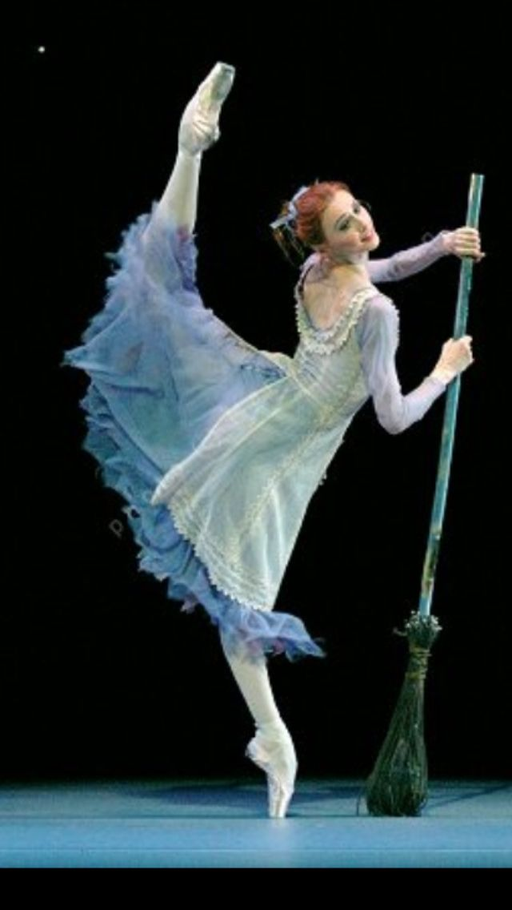

Considerada uma das maiores bailarinas clássicas do século XXI, admirada internacionalmente por sua técnica impecável, seus movimentos extremamente precisos e sua capacidade única de transmitir emoção. Nascida em 10 de junho de 1979, na cidade de Lutsk, na Ucrânia, Zakharova iniciou sua relação com a dança ainda na infância. Sua flexibilidade natural e sua musicalidade chamaram atenção desde cedo, conduzindo-a ao universo do ballet profissional.
Início da Formação
Com apenas 10 anos, Svetlana foi aceita na Escola Coreográfica de Kiev, onde iniciou sua formação formal. Ali, desenvolveu a base técnica que marcaria toda sua carreira: leveza, precisão, amplitude de movimentos e uma presença cênica já notável para sua idade.
Seu talento excepcional levou-a, aos 15 anos, a ser admitida na renomada Academia de Balé Vaganova, em São Petersburgo, considerada uma das instituições mais prestigiadas do mundo. Durante seu período na academia, Zakharova demonstrou disciplina absoluta e uma evolução acelerada, conquistando destaque entre os jovens talentos que estudavam sob o exigente Método Vaganova.
Carreira no Mariinsky Ballet
Em 1996, aos 17 anos, Svetlana entrou para o Mariinsky Ballet (Kirov Ballet), uma das companhias mais tradicionais do planeta. Um ano depois, tornou-se a mais jovem bailarina a conquistar o título de Solista do Mariinsky, algo raríssimo.
Durante sua passagem pela companhia, brilhou em papéis como: Odette/Odile - O Lago dos Cisnes, Nikiya - La Bayadère, Aurora - A Bela Adormecida, Giselle - Giselle, Kitri - Dom Quixote. Seu virtuosismo técnico, especialmente nas linhas alongadas e na amplitude das extensões, tornou-se sua assinatura. Críticos do mundo inteiro passaram a associá-la à ideia de “perfeccionismo” dentro do ballet clássico.
Transição para o Bolshoi
Em 2003, Zakharova foi convidada a integrar o Bolshoi Ballet, em Moscou, onde se tornou imediatamente Primeira-Bailarina. No Bolshoi, expandiu ainda mais seu repertório e amadureceu como intérprete, passando de grande fenômeno técnico a artista completa.
Entre seus papéis de destaque no Bolshoi estão: Julieta - Romeu e Julieta, Marguerite Gautier - A Dama das Camélias, Medora - O Corsário, Raymonda - Raymonda, Cisne Negro/Branco - O Lago dos Cisnes (versões clássica e contemporânea).
Turnês e Carreira Internacional
Além de sua atuação nas grandes companhias russas, Svetlana brilhou em apresentações ao redor do mundo. Participou de galas internacionais, festivais de dança, colaborações com coreógrafos renomados e apresentações em teatros tradicionais da Europa, Ásia e América.
Ela também se tornou uma presença frequente em transmissões cinematográficas de balés do Bolshoi, levando sua arte para plateias que talvez nunca tivessem a chance de vê-la ao vivo.
Estilo e Reconhecimento Svetlana Zakharova é celebrada por: Extensões altíssimas e perfeitas, Controle absoluto do corpo, Elegância e leveza ímpares, Presença cênica magnética, Técnica limpa e refinada, Interpretação profundamente emocional. Sua combinação de virtuosismo com sensibilidade fez com que fosse comparada a grandes nomes da história do ballet, como Galina Ulanova e Maya Plisetskaya.
Prêmios e Conquistas
Ao longo da carreira, recebeu diversos prêmios importantes, incluindo: Artista do Povo da Rússia, Prêmio Benois de la Danse, Prêmio do Estado da Rússia, Medalhas e condecorações por contribuições à cultura e arte. Essas honrarias reforçam seu impacto não apenas como bailarina, mas como figura influente dentro da cultura russa e mundial.
Contribuições AtuaisAlém de sua carreira como bailarina principal, Svetlana atua em projetos especiais, participa de competições e eventos culturais como jurada, e se dedica à promoção da arte do ballet para novas gerações. Suas masterclasses e participações públicas influenciam jovens bailarinos do mundo inteiro.
LegadoSvetlana Zakharova permanece como um dos grandes símbolos do ballet, seu legado está na união entre técnica impecável e sensibilidade artística, inspirando bailarinos, professores e admiradores da dança em todas as partes do mundo.